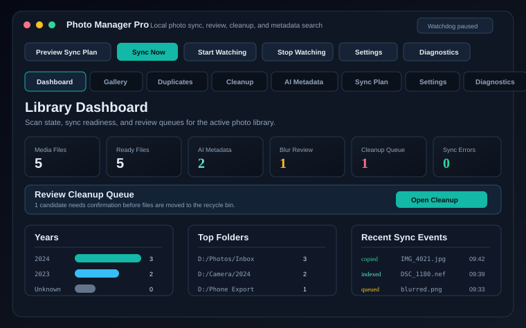
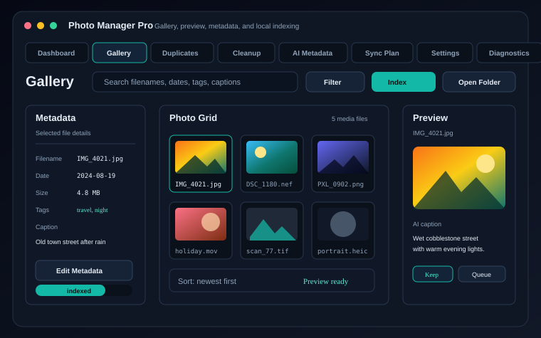
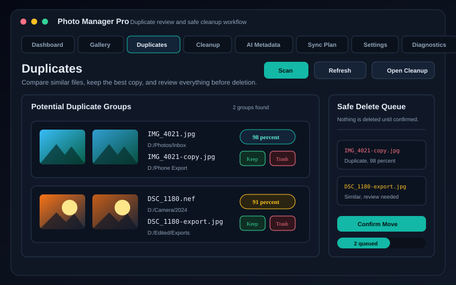

Sync and sort
Copies media into year folders using EXIF, filename dates, and filesystem timestamps as fallbacks.
Local photo organization for Windows and Linux
A desktop workflow for sorting, indexing, reviewing, and cleaning up photo libraries on local machines, with optional cloud sync planned as a separate backend.
What it does
Copies media into year folders using EXIF, filename dates, and filesystem timestamps as fallbacks.
Stores file metadata, sync events, blur scores, captions, tags, and review decisions in SQLite.
Queues duplicates and low-quality candidates before moving files to the recycle bin.
Watches folders through the GUI, Windows Services, or Linux systemd user services.
Platforms
Ships as a PyInstaller executable, supports startup settings, and can run headless through Windows Services.
Runs from the Python package or source, with headless background sync managed by a systemd user service.
Keeps metadata in SQLite and file operations on the current machine unless an optional cloud backend is configured.
Future cloud sync should use OAuth, dry-run planning, resumable transfers, and conflict-aware background queues.
Next steps
Find missing, moved, changed, zero-byte, and duplicate-indexed files before repair actions.
Preview, copy, verify, and report imports from phones, camera cards, and staging folders.
Save filtered library views based on years, folders, file types, tags, blur scores, and review state.
Create readable summaries, CSV reports, resized copies, ZIP bundles, and static HTML galleries.
Add optional Google Drive synchronization without changing the default local-first workflow.
Screenshots

dashboard.svg
gallery.svg
duplicates.svgDistribution
Release automation builds a Windows executable. Linux users can install the Python package and run the same GUI or headless sync commands.
python -m pip install photosync-tool
photo-manager-pro
photo-manager-service install
{kind=link}
{kind=link}
{kind=link}